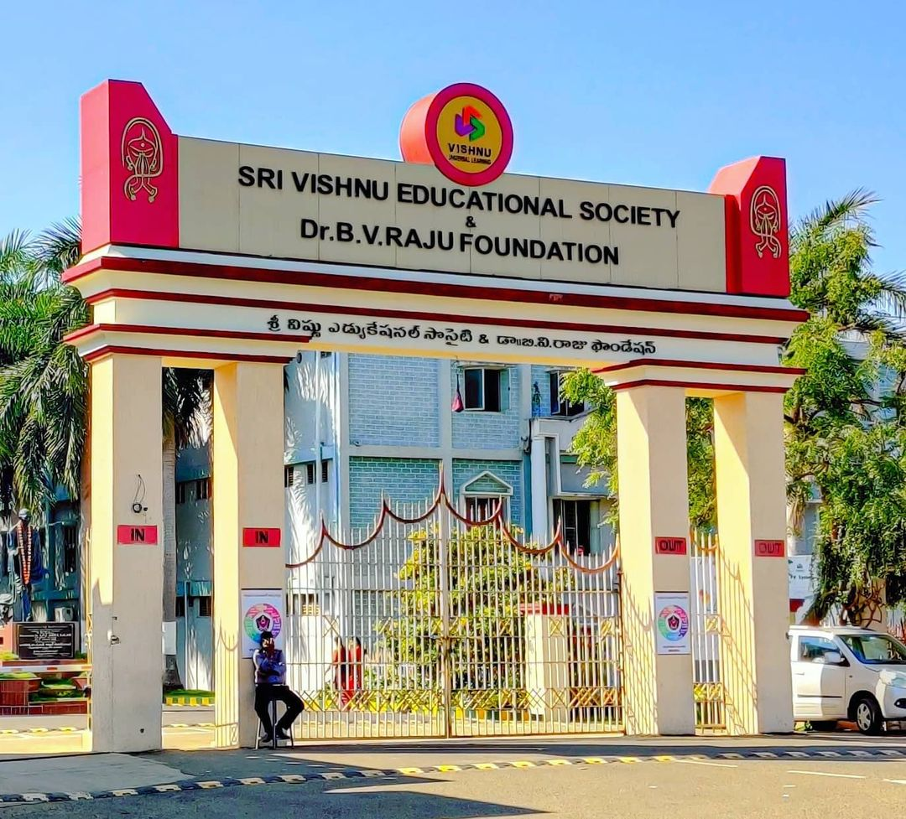

Welcome to icRS 2021!
Sustainable development depends on significant improvements in the efficient use of resources. It requires a holistic global life cycle perspective from producers to end consumers, especially in a closed loop fashion. Consequently, communities, governmental and business organisations have sought methods for the reuse, recycling, remanufacturing and recovery of products and materials, thereby extending their useful life and reducing quantities of waste. The United Nations’ Sustainable Development Goals (SDGs) target “doing more and better with less”, which means that decreasing resource utilization, degradation, and pollution along the entire life cycle, together with an increase in lifestyle quality, can improve the social benefits of economic activities. The resulting paradigm shift has been popularly and broadly termed as the circular economy (CE).
The series of International Conferences on Resource Sustainability (icRS), sponsored by Resources, Conservation & Recycling journal, allows researchers and practitioners to exchange ideas on latest development in resource sustainability. icRS 2021 aims to provide rich opportunities for collaboration between researchers and industrial practitioners in order to advance the critical role of resources in CE as it pertains to underdeveloped, developing and developed economies. At icRS 2021, we will particularly welcome interdisciplinary contributions that involve natural sciences, social sciences, and engineering. We define resources broadly to include physical resources, biological resources, and “misplaced” resources:
physical resources: metals, non-metallic minerals, energy, water, etc.
biological resources: food, forestry, land, ecological systems, etc.
"misplaced" resources: air emissions, water pollutants, solid waste
>> icRS 2021 Program-at-a-glance
The conference will be the ideal opportunity in which to foster networking, collaboration and joint efforts among the participants, and thereby to advance the theory and practice as well as to identify major trends in the following core areas (but not limited to):
Efficiency and environmental impacts of resource utilisation
Sustainable consumption and production
Waste reduction, reuse, recycling and recovery
Cleaner production and supply chains
Resource and waste management
Environmental and sustainability assessment
Buildings and environment
Sustainable products and services
Industrial ecology
Waste treatment and disposal
Mining and sustainability
Material systems
Ecological and environmental indicators
Resources and sustainable development goals
Water and wastewater systems
Waste utilisation
Climate change mitigation
Transportation systems and sustainability
Food-energy-water nexus
Resources and circular economy
Education for sustainable development
Governance, legislation, and policy for sustainability
At icRS 2021, we will also present Best Paper Awards, Best Student Paper Awards, and Best Student Poster Awards. These awards will be judged by the Award Committee which will consist of a group of leading experts from around the world.
We are looking forward to welcoming you at icRS 2021 in Dublin!
Dr. Pezhman Ghadimi , LOC Chair icRS 2021,
Prof. Michael Gilchrist, LOC Co-chair icRS 2021,
Prof. Ming Xu, icRS General Chair.